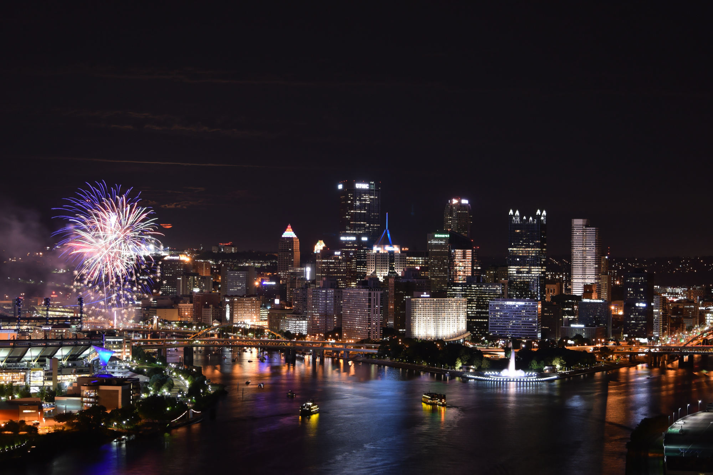
Fireworks @ West End Overlook
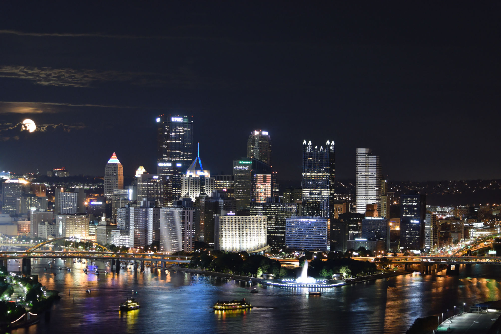
West End Overlook

Mr. Rogers
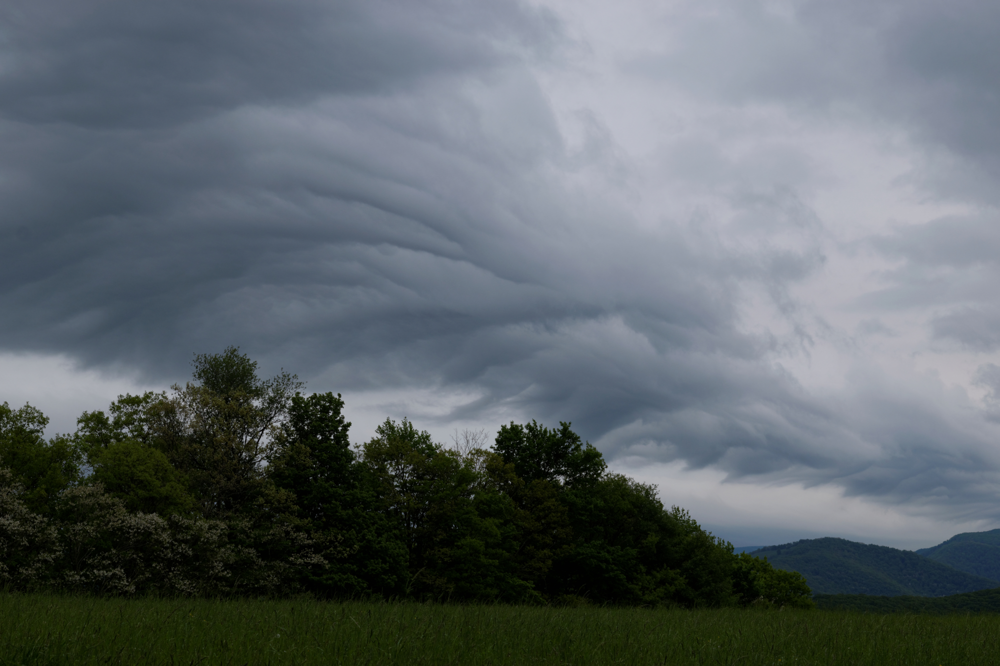
Undulatus Clouds - Davis, WV

Elakala Falls @ Blackwater Falls State Park - Davis, WV
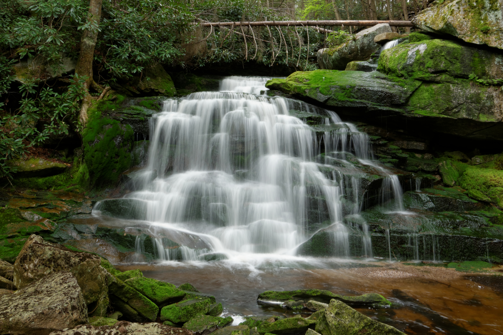
Elakala Falls @ Blackwater Falls State Park - Davis, WV
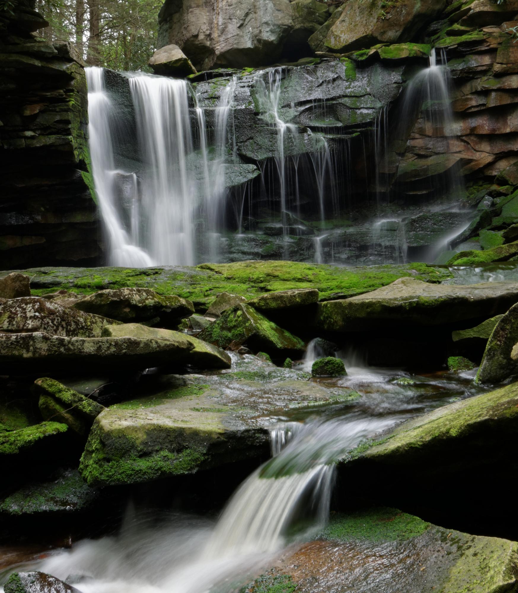
Elakala Falls @ Blackwater Falls State Park - Davis, WV
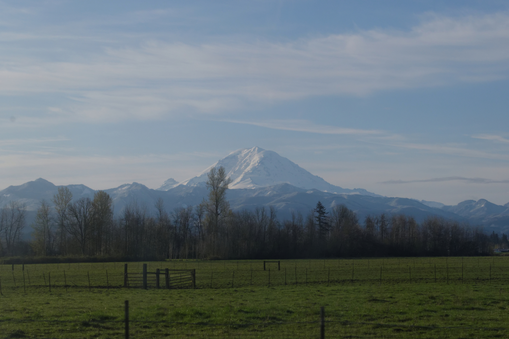
Mt. Rainier - Enumclaw, WA
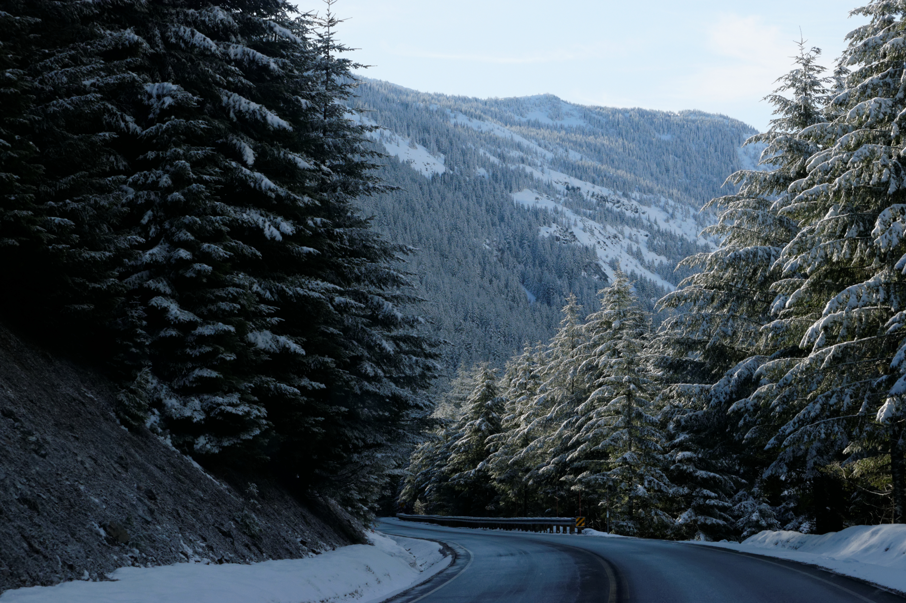
Driving up to Crystal Mountain Resort - Enumclaw, WA
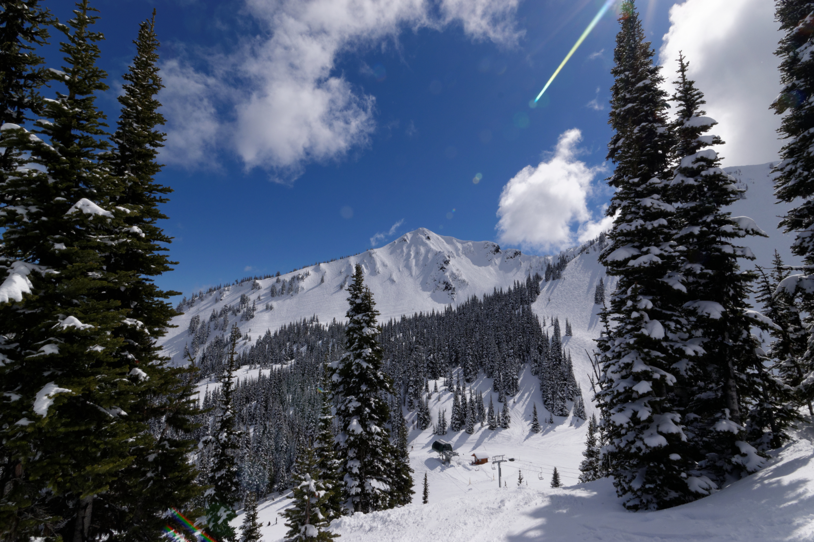
Bottom of Chair 6 @ Crystal Mountain - WA
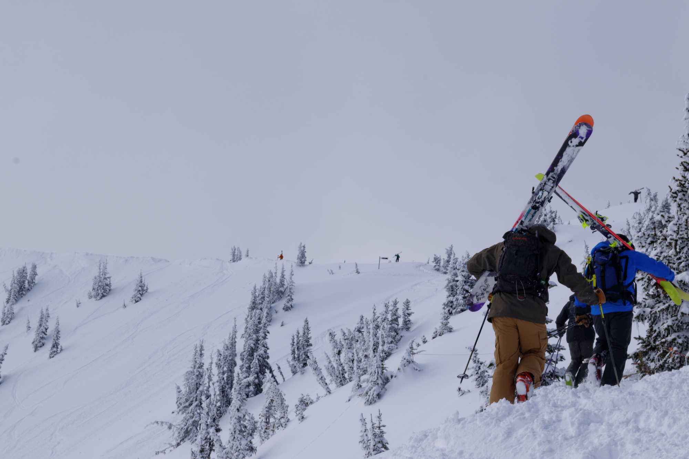
Hikers @ Crystal Mountain Resort - WA
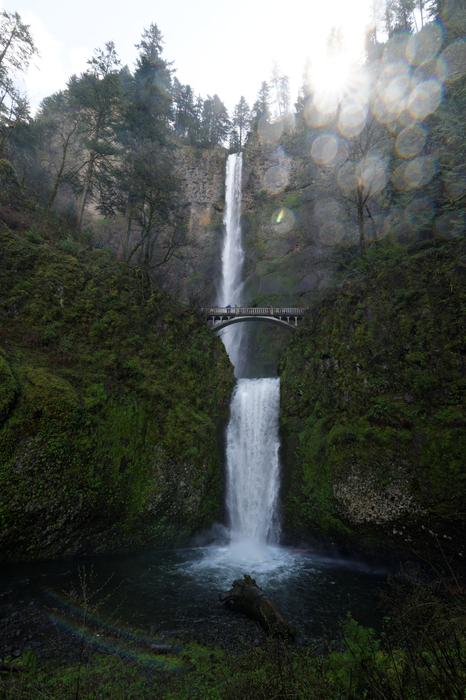
Falls in Oregon
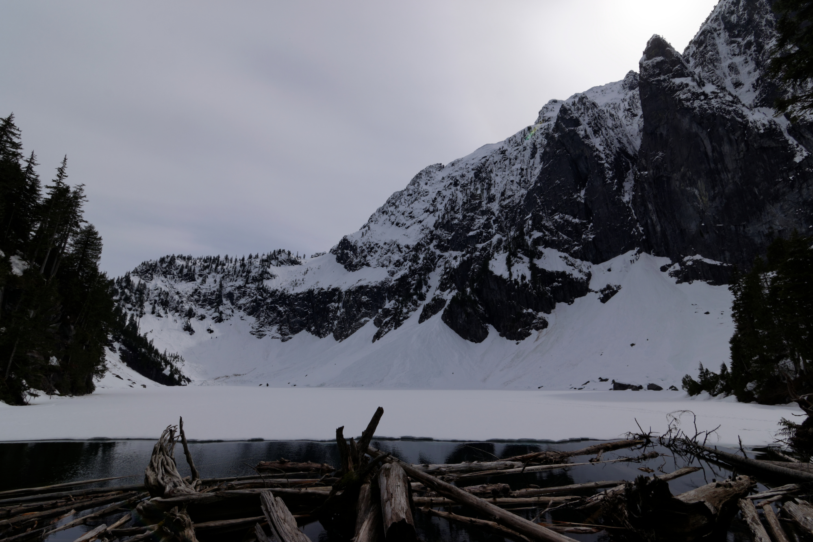
Mostly frozen Lake Serene - WA
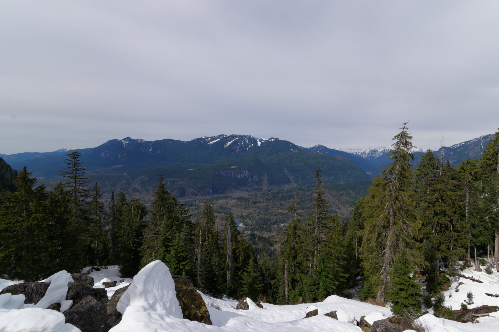
The hike back down from Lake Serene - WA

Columbia River Gorge - OR